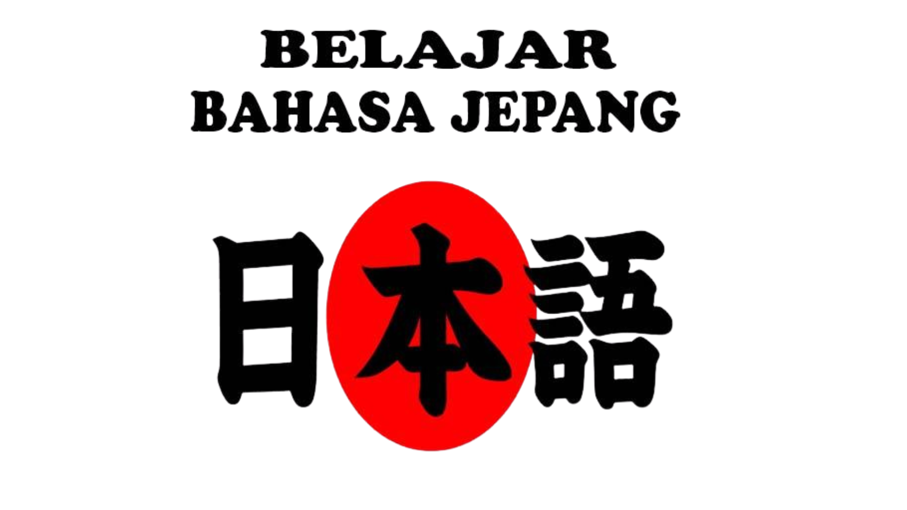

Dr.Dillon
Platform pembelajaran bahasa Jepang interaktif
dengan materi lengkap, latihan harian, dan sistem
penilaian otomatis.

Bergabung dengan 1,100+ pelajar lainnya
★★★★★ 4.9/5 (850+ ulasan)
★★★★★ 4.9/5 (850+ ulasan)
